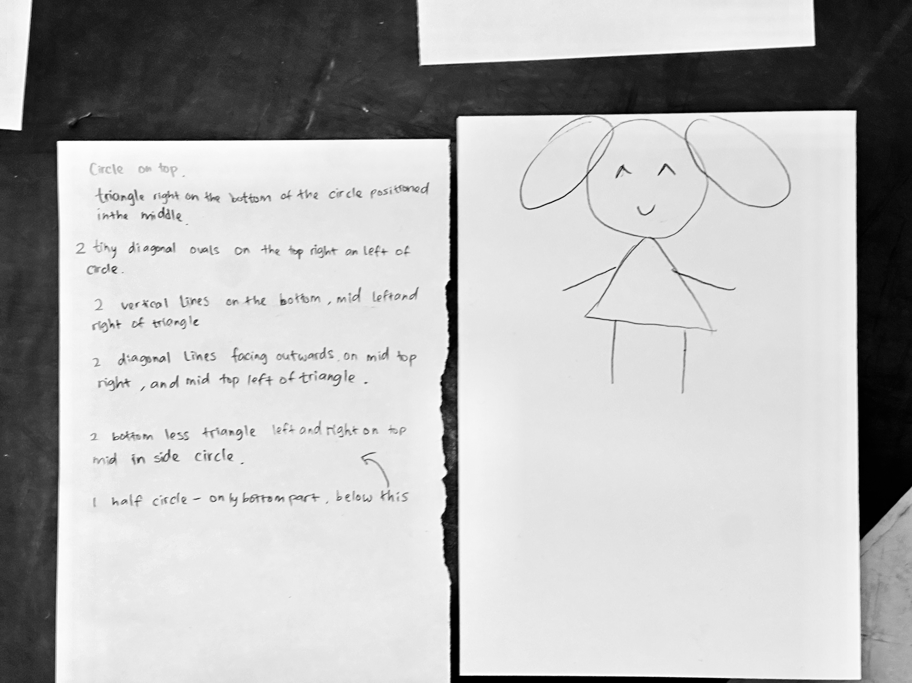
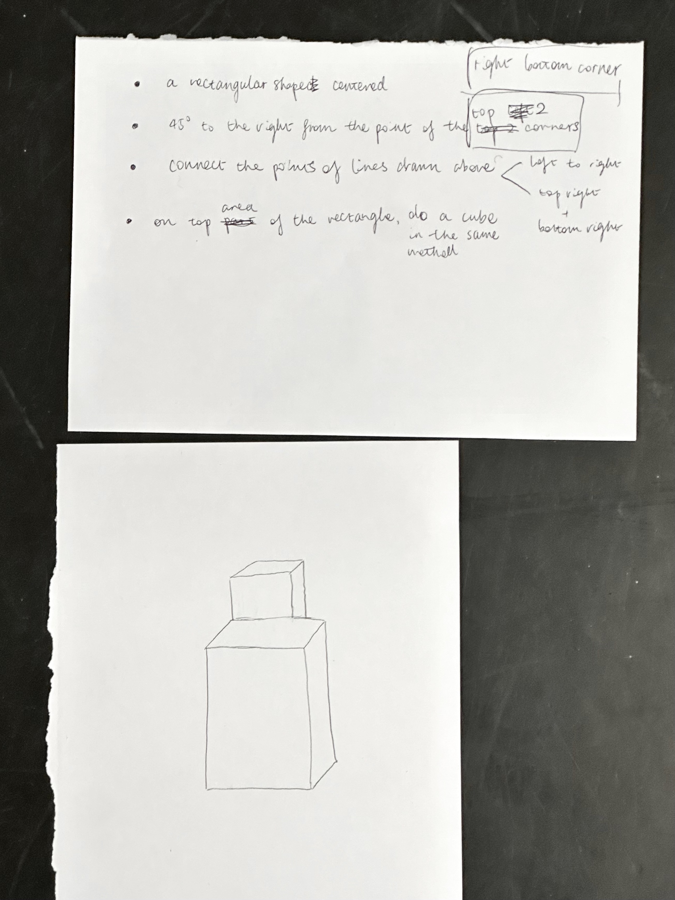

machines are stupid, we make them smart!


"Machines are stupid," as Andy puts it. Unlike humans, they lack inherent understanding and operate solely on given commands. This underscores our responsibility as creators to translate our ideas into a language that machines can interpret effectively.
By providing precise instructions, we enable machines to function in ways that align with our vision. This relationship highlights the collaborative nature of creative coding and design: while machines can execute complex tasks, it’s our insight and direction that breathe life into their operations, transforming their limitations into opportunities for innovation.
clear instructions, precise results
During the activity of interpreting drawings through machine instructions, I gained a deeper understanding of the critical role accuracy plays in coding. In my instructions, I specified the creation of a rectangular box but failed to clarify whether it should be oriented horizontally or vertically.
As a result, my friend interpreted the instructions differently, drawing the box in the opposite direction. This experience underscored the necessity of providing clear and precise instructions, much like those required by a machine, to achieve the intended outcome.
In contrast, my friend’s instructions were notably effective and inspired me. She employed clear, measurable terms such as "diagonal lines" and "facing outwards," which facilitated a more accurate interpretation of her directives.
beyond the default
In creative coding, I’ve realised that interacting with design elements differs significantly from traditional graphic design tools like Adobe Illustrator. In Illustrator, rotating an object is intuitive—adjusting a box transforms it by degrees, often in simple increments like 90%. This user-friendly visual approach requires little thought about how the system interprets it.
However, in coding environments like p5.js, rotating objects is more complex. It involves understanding the coordinate system and applying transformations like rotation and translation programmatically, requiring more precision and thought.
This shift from a visual to a mathematical mindset is a challenge and an opportunity. It forces me to engage with the mechanics behind the scenes, developing a deeper understanding of how graphics are generated and manipulated. Unlike in Illustrator, where much of the work is done for you, coding requires you to be explicit about each action. Every movement, every rotation, and every transformation is something you actively design into
the code.
This realisation has taught me to approach creative coding more precisely and appreciate its flexibility. Understanding the logic behind transformations gives far greater control over the creative process than traditional design tools. Coding allows for experimentation that the default settings in pre-built software would limit.
Ultimately, coding pushes me beyond relying on
defaults, forcing me to think about design more dynamically and interactively. It encourages me to engage more deeply with both the process and outcome, offering a freedom that isn't always present in typical graphic design environments.